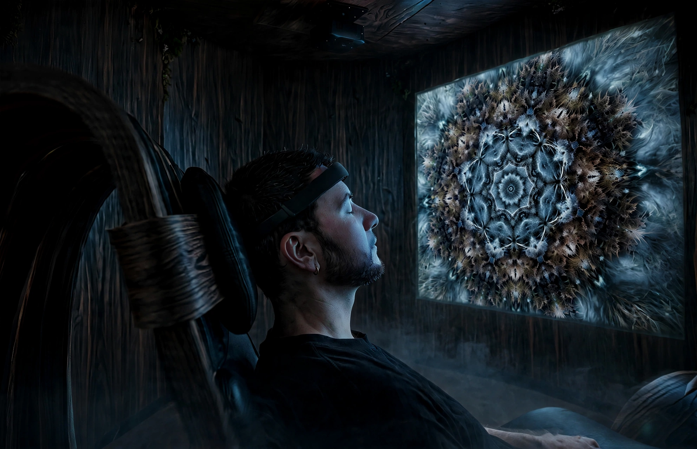

Clydeoscope is a neuroaesthetic design studio and immersive tech lab in Glasgow. We combine design and neuroscience with a goal of helping people shift perspective and reconnect with how they feel.
We explore our design ideas and combine them with a neuroscience lens to build products and experiences that are interactive, immersive, and futuristic.
Neuroaesthetics is the thread that runs through all of our work: the study of how our brains and bodies respond to art, sound, space and design. It's an emerging science with a simple, radical finding. The things we see, hear and move through shape how we feel far more than we realise.
Everything we make is designed to be felt, not just used, to give a sense of what technology could be, when it's centred more around elevating our experience of life rather than gaming our attention.
A small, enclosed environment where nature and technology meet, built to bring you back to a more settled state.
Inside, sound, light and gentle movement respond to your own body, drawing you down out of the noise and into something quieter. It borrows from the natural world and the tools of the new one, and asks only that you stop, and notice.
You leave with a little more space than you came in with, and a glimpse of what your nervous system was doing while you were there.

John Campbell
Neuroaesthetic Designer & Founder
I'd had this idea for years. At some point I realised it couldn't wait any longer. I wanted to give Glasgow something it doesn't have, something that lines up with what I believe deeply: that we deserve to live fuller, more present lives.
My career has spanned UX, UI, psychology and development, mostly in web design. I love making things that are genuinely useful. But I wanted to try something harder: not how to make things people use, but how to make things people feel.
For years, self-help and psychology have pulled at me. Close to 60 books over the last 5 or 6 years, digging into the work of people like Gabor Maté, Bessel van der Kolk and Johann Hari, all bringing the mind-body connection back into focus. Then I read Rutger Bregman's Moral Ambition, and something clicked.
The modern world didn't suddenly become overwhelming. It crept up on us: the apps, the noise, the doomscrolling. Our brains were never built for this much digital noise, and our nervous systems are telling us so.
Clydeoscope is my answer to that. A belief that art, sound and designed experience can change how we feel, alter our perception, and help us live better because of it.
Alongside our own work, we're looking to create partnerships, take on commissions across a range of design work, and collaborate with people who want to make something genuinely different. Each one helps fund the next step and brings us closer to the bigger picture. We're exploring funding and new ideas to grow beyond the pod into a permanent home in Glasgow: a new kind of creative and engaging third space for the city.